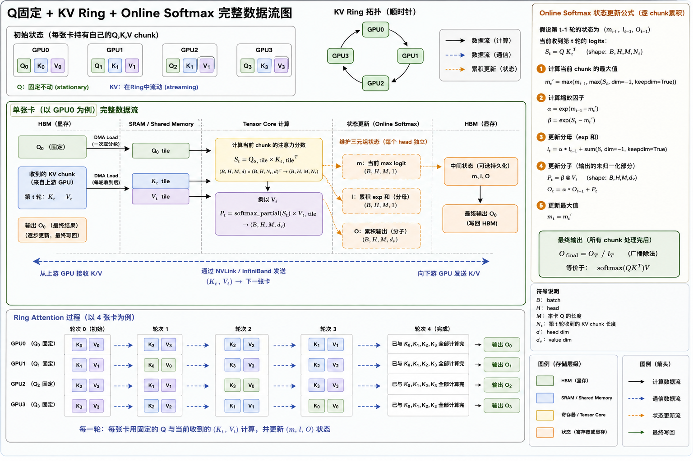

滚轮缩放 · 按住拖动平移 · 按 ESC 或点击空白处关闭
Efficient Attention — 从 O(n²) 到线性，解锁长上下文推理
注意力真正贵的地方不是乘法做不完，而是那张 n×n 的中间表来回搬运——GPU 的算力早就过剩了，缺的是内存带宽。
标准 Scaled Dot-Product Attention 的计算公式：
其中 Q、K、V 的形状为 [n, d]（n = 序列长度，d = 头维度），关键矩阵 QKT 的形状为 [n, n]。
| 指标 | 复杂度 | 说明 |
|---|---|---|
| 时间 | O(n² · d) | QKT 矩阵乘法 + softmax + AV 乘法 |
| 内存 | O(n²) | 需要存储完整的 n×n 注意力权重矩阵 |
现代 GPU（如 A100）算力极强（312 TFLOPS FP16），但内存带宽有限（2 TB/s）。标准注意力的算术强度（Arithmetic Intensity）较低：
标准 Multi-Head Attention (MHA) 中，每个注意力头拥有独立的 Q、K、V 投影。MQA 的改动：
1/h（例如 h=32 时减少 32 倍）PaLM Falcon-40B StarCoder
MHA 到 MQA 不是二选一，而是一根滑杆：把 KV 头数从 h 一路调到 1，精度和 KV Cache 体积成对下降，GQA 就是停在中间的那一档。
GQA 将 h 个 head 分为 g 组，每组共享一组 KV：
| 方法 | KV Head 数 | KV Cache 大小 | 模型精度 | 推理速度 | 代表模型 |
|---|---|---|---|---|---|
| MHA | h | 2 × n × h × d | 最高 | 最慢 | GPT-3, BERT |
| GQA | g (1<g<h) | 2 × n × g × d | 接近 MHA | 较快 | LLaMA-2/3 70B |
| MQA | 1 | 2 × n × 1 × d | 略有下降 | 最快 | PaLM, Falcon |
注：KV Cache 大小公式中 2 表示 K 和 V 各一份，n = 序列长度，d = 头维度
论文提出可以通过对已训练好的 MHA 模型的 KV head 做 mean-pooling 来初始化 GQA，再用少量数据微调即可恢复精度。
FlashAttention（Dao et al., 2022）不改变注意力的数学计算，而是通过IO-Aware的算法设计避免在 HBM 中存储 n×n 注意力矩阵：
FlashAttention 一个浮点数都没少算，它只是不再把中间结果写回显存——省的全是搬运时间，所以结果和标准注意力逐位相同。
| 存储 | 容量 | 带宽 | 特点 |
|---|---|---|---|
| SRAM (片上) | ~20 MB (A100) | ~19 TB/s | 快但小 |
| HBM (显存) | 40/80 GB (A100) | ~2 TB/s | 大但慢 |
FlashAttention 的核心洞察：将计算尽量放在 SRAM 中，减少 HBM 读写次数。
分块计算的难点：softmax 需要整行的全局最大值和求和。解决方案：
| 指标 | 标准注意力 | FlashAttention |
|---|---|---|
| HBM 内存 | O(n²) | O(n)（不存 n×n 矩阵） |
| HBM 读写 | O(n² + nd) | O(n²d / M)（M = SRAM 大小） |
| 速度（端到端） | 1× | 2-4× 提升 |
| 数学精确性 | 精确 | 精确（完全一致） |
| 版本 | GPU | 达到峰值比 | 核心优化 |
|---|---|---|---|
| FlashAttention-1 | A100 | ~30% | Tiling + Online Softmax |
| FlashAttention-2 | A100 | 50-73% | 序列并行 + 减少非矩阵运算 |
| FlashAttention-3 | H100 | ~75% | 异步 Tensor Core + Ping-pong |
KV Cache 的浪费不是算法问题而是内存管理问题——按最长可能长度预留连续显存，就像给每个进程预留最大内存一样荒唐，分页正是操作系统三十年前给出的答案。
PagedAttention（Kwon et al., 2023）解决 LLM 推理服务中的 KV Cache 内存碎片化问题：传统方案按最大序列长度预分配连续显存，内部碎片 + 外部碎片导致利用率仅 20-40%。它把操作系统的虚拟内存分页机制搬到 GPU 显存——将 KV Cache 切成固定大小的 Block（如 16 token/block），用 Block Table（页表）映射逻辑位置 → 物理 Block，按需分配、无需物理连续；并借助 Copy-on-Write 让 beam search / 并行采样共享前缀 KV Block。
详见 DP08 · KV Cache 与推理优化（含虚拟内存分页类比、Block Table、Copy-on-Write 完整机制与 vLLM 生产数据）。
Sliding Window Attention (SWA) 限制每个 token 只关注局部窗口内的 token：
滑动窗口把"每个词都要看全文"换成"每个词只看邻居"，全局信息则交给层数去传递——本质是用深度换宽度。
| 方法 | 时间复杂度 | KV Cache 大小 |
|---|---|---|
| 标准注意力 | O(n² · d) | O(n · d) |
| Sliding Window | O(n · w · d) | O(w · d)（固定） |
当 n >> w 时，计算和内存都显著降低，且 KV Cache 大小恒定（不随序列增长）。
虽然单层只看 w 个 token，但信息通过多层传递可以覆盖更远距离：
实践中常与全注意力交替使用（如 Mixtral 部分层用全注意力），或在最后几层使用全注意力汇总全局信息。
Ring Attention（Liu et al., 2023）解决单设备显存无法容纳超长序列的问题：
| 设备数 N | 每设备序列长度 | 总序列长度 |
|---|---|---|
| 8 | 128K | 1M |
| 64 | 128K | 8M |
| 256 | 128K | 32M |
理论上可以支持无限长序列（受限于设备数量而非单设备内存）。

💡 提示：点击上方缩略图可全屏查看全图。
实证发现：标准注意力矩阵中大量权重接近 0，真正重要的注意力连接是稀疏的。因此可以设计固定或可学习的稀疏 pattern，跳过不重要的位置对。
Google 提出，在 Longformer 基础上增加随机注意力：
| 方法 | Pattern | 复杂度 | 特点 |
|---|---|---|---|
| Sparse Transformer | Stride + Fixed | O(n√n) | 固定 pattern |
| Longformer | Local + Global | O(n·w) | 针对文档任务 |
| BigBird | Local + Global + Random | O(n·w) | 理论可证明通用性 |
标准注意力中 softmax 导致 O(n²)，线性注意力通过去掉 softmax 来降低复杂度：
关键：先计算 φ(K)T · V（形状 d×d），再左乘 φ(Q)。当 d << n 时，复杂度从 O(n²d) 降到 O(nd²) ≈ O(n)。
softmax(qkT) ≈ φ(q)T · φ(k)| 方案 | 核函数选择 | 特点 | 与标准 Attention 的质量差距 |
|---|---|---|---|
| Linear Transformer | ELU+1 核：φ(x) = elu(x) + 1 | 最简单的线性化，实现容易 | 困惑度差距约 5-15% |
| Performer | 随机特征核（FAVOR+） | 无偏估计 softmax，理论保证强 | 困惑度差距约 2-8% |
| RetNet | 指数衰减 + 门控机制 | 支持并行训练 + 递归推理，微软提出 | 接近标准 Attention，差距约 1-3% |
| Mamba (SSM) | 状态空间模型（非注意力） | 选择性扫描，硬件感知实现 | 部分任务超越 Attention，NLU 任务仍弱 2-5% |
何时选择线性注意力：(1) 序列长度超过 32K 且延迟敏感的场景；(2) 端侧/嵌入式部署，无法承受 O(N²) 开销；(3) 作为混合架构的一部分——底层用线性注意力处理长距离依赖，顶层用标准注意力精修局部信息。
纯线性注意力在质量上仍有差距，纯标准注意力在长文本上代价太大。2024-2025 年的前沿趋势是混合架构——将线性注意力（或 SSM）与标准注意力交替堆叠，通过分层策略兼顾两者优势：
| 混合方案 | 架构设计 | 序列长度 | 效果 |
|---|---|---|---|
| Jamba（AI21 Labs） | 每 5 层 Mamba 配 1 层标准 Attention | 256K | 接近 Llama 2 70B 质量，推理快 3x |
| Zamba（Zyphra） | 共享 Attention 层 + 独立 Mamba 层交替 | 128K | 参数量仅 7B，长文本质量接近同规模 Transformer |
| Griffin（Google DeepMind） | 门控线性循环 + 局部滑动窗口 Attention | 64K+ | 训练效率提升 40%，质量与标准 Attention 持平 |
核心取舍：混合架构的本质是在"全局信息检索精度"和"序列处理效率"之间找平衡点。标准注意力层负责精确的局部信息交互（类似"精读"），线性注意力/SSM 层负责高效的长距离信息压缩（类似"泛读"）。实验表明，仅需 20-25% 的标准注意力层即可保留大部分质量优势。这条路线可能成为下一代长文本模型的主流方案。
答：时间复杂度 O(n²d)，空间复杂度 O(n²)（需要存储 n×n 注意力矩阵）。序列长度翻倍时，计算和内存都增长 4 倍。对于 128K token 的序列，n×n 矩阵约需 30GB（FP16），远超单块 GPU 显存。此外，标准注意力是 memory-bound 的——算力不是瓶颈，数据搬运（HBM ↔ SRAM）才是真正的性能瓶颈。
答：MQA 让所有 attention head 共享同一组 KV（KV head=1），GQA 是 MHA 和 MQA 的折中——将 h 个 head 分为 g 组，每组共享一套 KV。LLaMA-2 70B 采用 GQA（h=64, g=8），在保持接近 MHA 精度的同时将 KV Cache 减少 8 倍，实现推理加速。
答：FlashAttention 不是近似方法，它与标准注意力的数学结果完全一致。加速原因：(1) 通过 Tiling 将计算分块放在快速的 SRAM 中进行；(2) 避免在慢速 HBM 中物化 n×n 注意力矩阵；(3) 使用 Online Softmax 技巧支持分块计算。本质是将 memory-bound 问题转化为更接近 compute-bound 的问题。
答：分块计算 softmax 的难点在于 softmax 需要整行的全局 max 和 sum。Online Softmax 的解决方案：维护 running max (m) 和 running sum (l)。每处理一个新 tile 时，更新 m_new = max(m_old, tile_max)，然后用 correction factor exp(m_old - m_new) 修正之前的部分和。这样最终结果与一次性计算完全一致。
答：三个主要改进：(1) 在序列长度维度增加并行化（FA-1 只在 batch×head 维度并行）；(2) 减少非矩阵运算（合并 softmax rescaling，减少 warp 间同步）；(3) 更优的 thread block 内工作分配。结果：在 A100 上达到理论峰值的 50-73%，相比 FA-1 速度提升约 2 倍。
答：解决 LLM 推理时 KV Cache 的内存碎片化问题。传统方案预分配最大长度的连续内存，利用率仅 20-40%。PagedAttention 借鉴 OS 虚拟内存思想：将 KV Cache 分成固定大小的 Block，用 Block Table 映射逻辑地址到物理地址，按需分配，支持 Copy-on-Write。这将 KV Cache 利用率提升到接近 100%，吞吐量提升 2-4 倍。
答：单层只关注局部 w 个 token，但通过多层堆叠实现全局感知。第 L 层的有效感受野 = L × w。以 Mistral-7B 为例：32 层 × 4096 窗口 = 131,072 的理论感受野。高层 token 通过低层的逐步传递间接获得了全局信息。额外优势：KV Cache 大小恒定（仅需存储 w 个 token 的 KV），不随序列增长。
答：将序列分割到 N 个设备上，设备排列成逻辑环。每个设备持有一段 Q，KV 块在设备间环形传递。关键优化：计算与通信重叠——设备在计算当前 KV 块的注意力时，同时将 KV 块发送给下一个设备。使用 Online Softmax 逐块累积结果。只要通信时间 ≤ 计算时间，通信开销就能被完全隐藏。
答：Longformer = 局部窗口 + 全局 token（[CLS] 等少数 token 关注所有位置）。BigBird 在 Longformer 的基础上增加了随机连接（每个 token 随机关注一些远距离 token）。BigBird 的随机连接有理论意义：Google 证明 Local + Global + Random 的组合具有 Turing completeness。两者复杂度都是 O(nw)，但 BigBird 的随机连接有助于远距离信息传递。
答：四个原因：(1) 精度差距——核函数近似在长序列语言建模上与 softmax 有明显差距；(2) 训练不稳定——缺乏 softmax 归一化容易发散；(3) FlashAttention 的出现使精确 attention 足够高效，减少了近似方法的需求；(4) 表达能力受限——d×d 隐式状态无法完整压缩 n×n 信息。当前趋势：SSM（如 Mamba）从不同角度解决线性复杂度问题，逐步替代了线性注意力的定位。